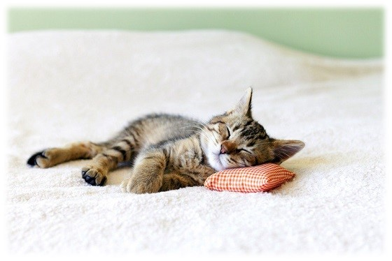

까칠해보이기만 한 고양이들:( 어떤 특성들이 있을까요?
청결
청결에 대한 집착으로 항시 그루밍을 하기 때문에 고양이 자체는 냄새가 거의 없다. 하지만 고양이 알레르기를 발생시킬 수는 있다. 고양이의 주식인 설치류들은 시각이 덜 발달되어 있는 반면, 후각과 청각이 매우 발달되어 있기 때문에 야생의 고양이에게 있어서 청결은 생존과도 직결된 중요한 문제다. 쉽게 말해 더러운 고양이는 먹지도 못한다. 고양이혀에는 까끌까끌한 돌기가 나 있어서 빗처럼 쓰이며, 침에는 냄새를 중화시키는 탈취 성분이 있어서 아무런 냄새가 나질 않는다.
야행성

고양이의 주식인 작은 동물들이 주로 야행성이기 때문에, 고양이도 야행성으로 진화했다. 이러한 습성때문에 고양이가 올라갈 수 있는 높이에는 물건을 치워주어야 한다. 그렇지 않으면 물건 떨어뜨리는 소리에 한숨도 못잘 정도이다. 성묘가 되는 1살정도부터는 밤에도 비교적 얌전해지고, 낮에는 깨어있고 밤에는 자는 주인의 생활패턴을 어느 정도는 맞춰준다고 한다.
사냥본능

설치류, 파충류, 곤충 등 작은 동물들을 사냥하는데에 타고난 능력을 가지고 있으며 인간에게 의식주를 전담시킨 지금도 이러한 사냥본능이 고스란히 남아있다. 그 때문에 자그마한 움직이는 것을 보면 환장을 한다.
높은 곳

항상 높은곳을 오르고 싶어하는 습성이 있다. 고양이들은 원래 야생에서 사냥을 하기 위해 주변을 살필수 있는 장소로 올라가려는 습성이 있는데 나무 위 같은 장소로 올라갔을 때 안정감을 느끼고 사냥감의 움직임을 파악할 수 있다. 기본적으로 고양이들은 유연하고 균형 감각이 훌륭하게 발달해 있어서 높은 곳에서 떨어져도 어느 정도는 충격을 분산시키는 능력을 가지고 있다.
잠

하루의 태반(고양이마다 다르지만 일반적으로 12~18시간)을 잠으로 보낸다. 15년 살면 대략 10년을 자는 셈. 낮에는 먹고, 자고, 그루밍하고... 대신 깊은 잠을 자지 않는다. 야생에서 고양이 정도 크기의 독립생활을 하는 동물은 자신의 목숨을 위협하는 포식자가 없으려야 없을 수 없는데, 이에 대한 대응으로 얕고 길게 자는 쪽으로 진화했다.
자세
고양이의 자세는 고양이가 느끼는 감정을 표한다. 고양이들 끼리 있거나, 사람이나 다른 동물들과 있을 때 고양이의 타고난 행동들을 관찰하기 가장 좋을 때이다. 고양이의 자세는 상황에 따라서 친근해질 수도, 공격적이 될 수도 있다.